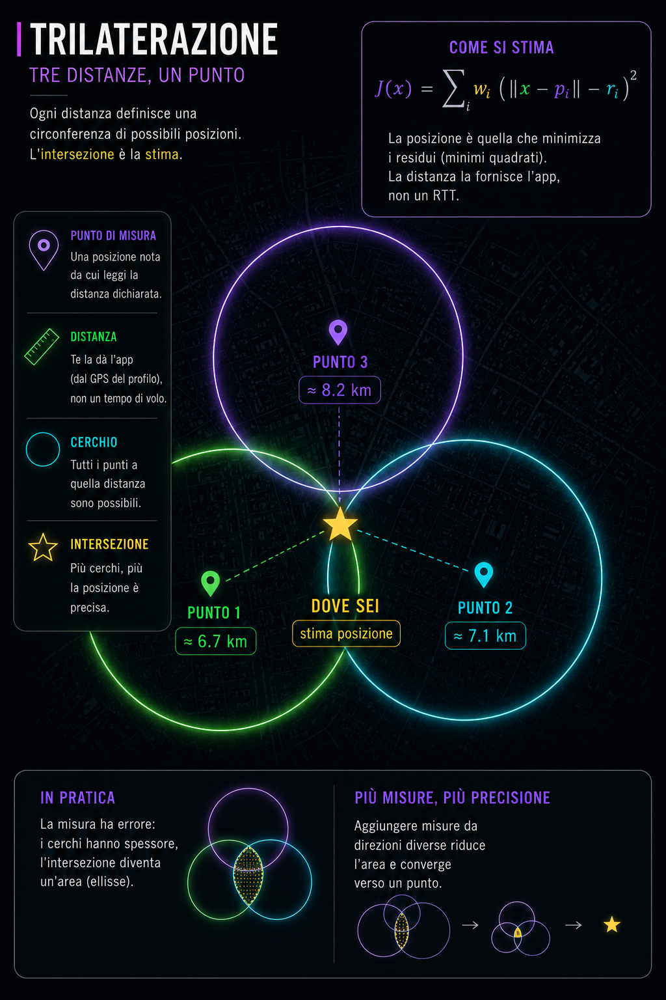
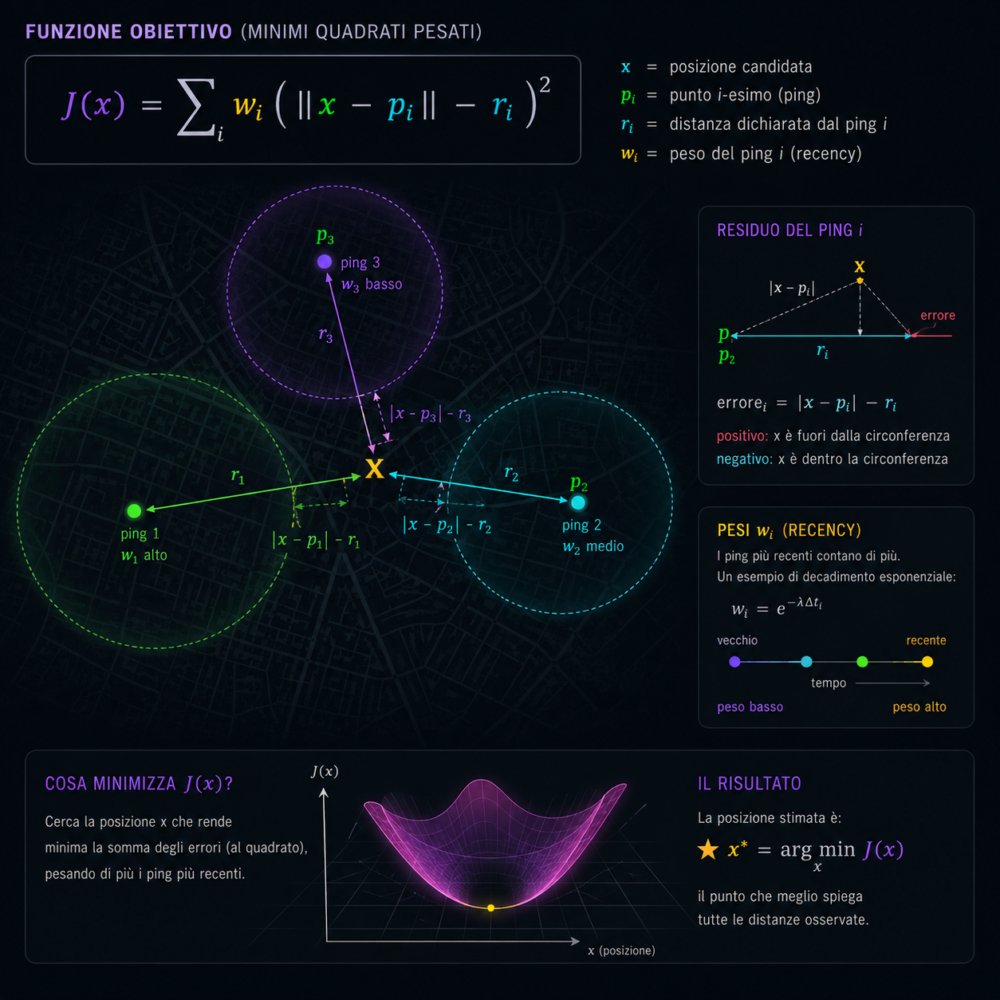
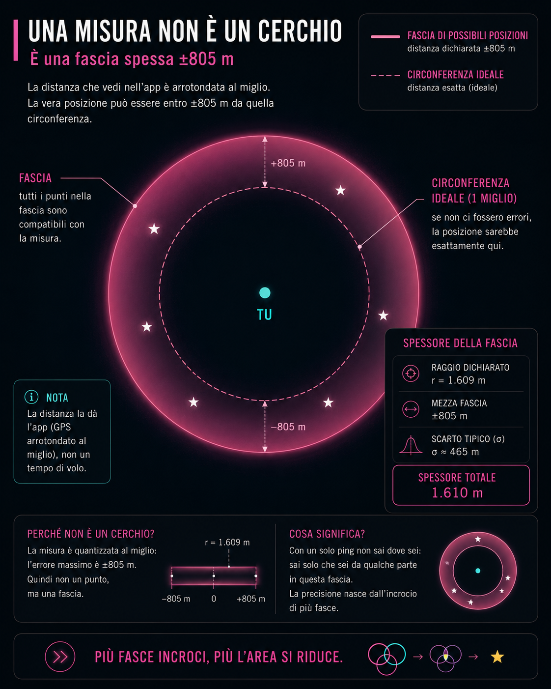
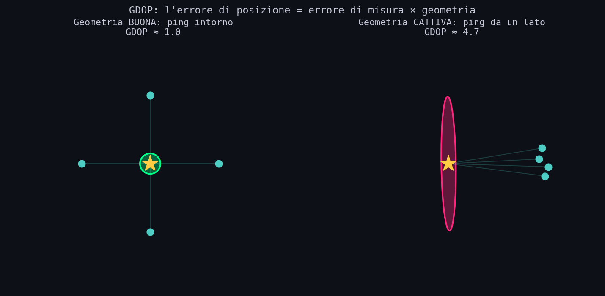
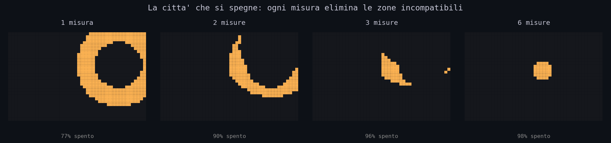
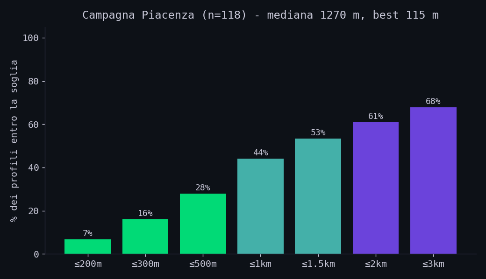
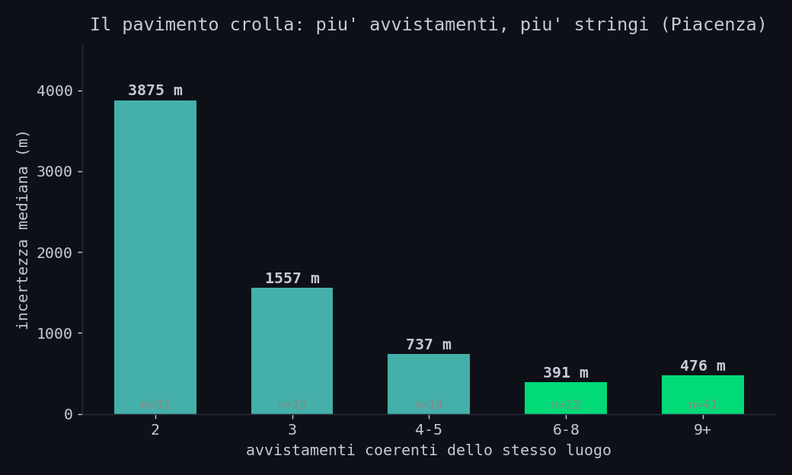
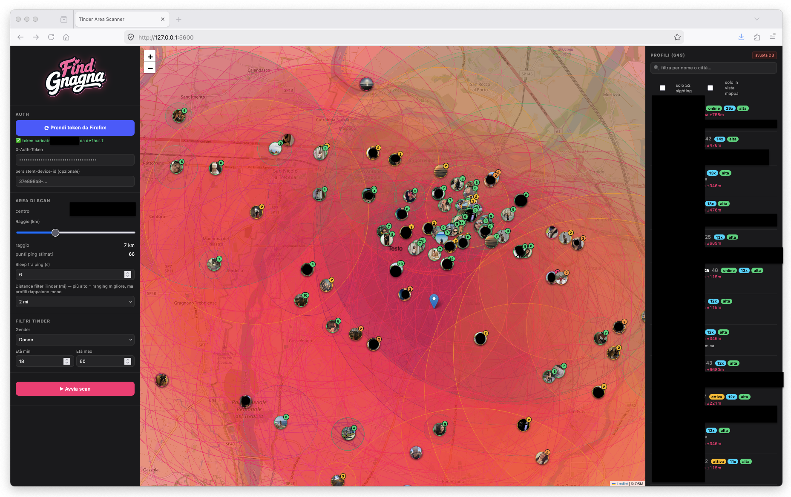
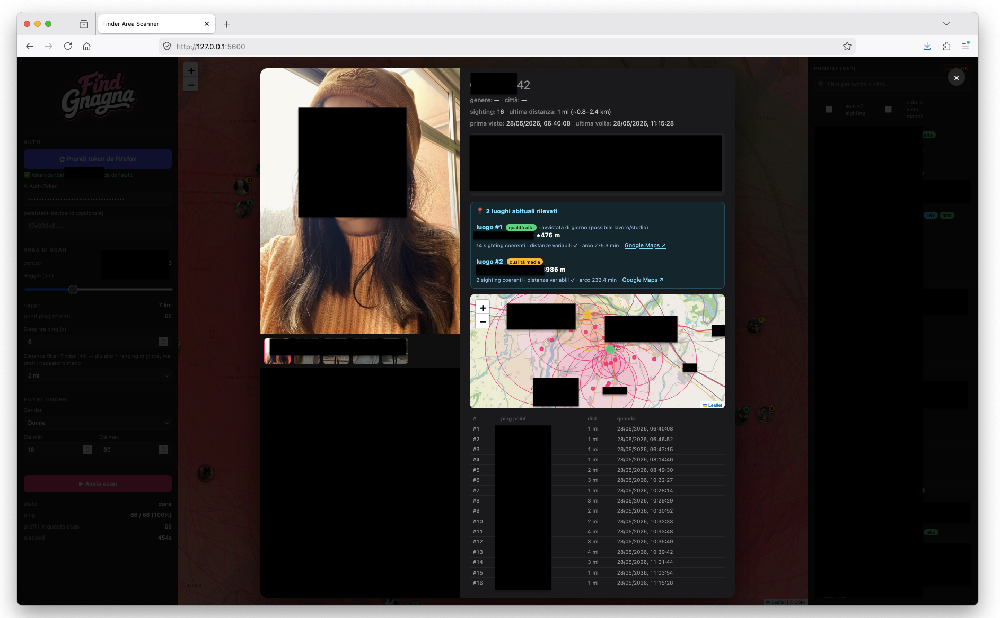

// Il Cassetto Digitale
Sezione 00. L'antefattoFacevo pulizia sul disco. Di quelle in cui cancelli venti giga di roba morta e ne ritrovi una che avevi dimenticato. In una cartella del 2022, sepolto tra script che non girano piu', c'era un vecchio tool che avevo scritto e battezzato, con tutta la finezza del caso, Find Gnagna.
Faceva una cosa sola: dato un profilo su un'app di incontri, provava a stimare dove abitava la persona. Triangolazione. Nel 2022 funzionava. L'ho riguardato e mi e' venuta la curiosita': dopo tutti questi anni, saranno cambiate le cose?
Quindi oggi parliamo di OSINT e dei pericoli nascosti delle app di incontri. Il punto e' scomodo: le difese ci sono, e sono migliorate parecchio, ma non bastano. Se qualcuno vuole, ti trova lo stesso. E non si ferma a un puntino sulla mappa: ti scheda. La zona dove vivi (non il civico, ma il tuo isolato), dove lavori, le strade che percorri, i posti che frequenti, la faccia, gli orari. Tutto da un semplice profilo, con la geometria e un paio di errori che continui a fare tu. E' piu' pericoloso di quanto pensi.
// Tre Cerchi, Un Punto
Sezione 01. La trilaterazione, sul serioTrilaterazione e' quello che fa il GPS. Se conosci la tua distanza da tre punti noti, sei sull'unico punto dove tre cerchi si incontrano. Il problema e' che le distanze reali non sono mai esatte: sono misure, con rumore. Quindi i tre cerchi non passano mai per uno stesso punto preciso, e non risolvi un sistema, lo approssimi ai minimi quadrati: cerchi la posizione che meglio spiega tutte le distanze osservate.

Formalmente e' una stima ai minimi quadrati non lineari pesati sui range (le distanze), la stessa famiglia di tecniche usata in radiolocalizzazione e nel GPS: niente di inventato per l'articolo. La posizione stimata e' quella che minimizza la somma dei residui, dando piu' peso agli avvistamenti recenti (una persona si muove, quelli vecchi contano meno).

Sotto il cofano e' codice da manuale: minimizzazione su griglia piu' raffinamento locale.
| 1 | def costo(x, avvistamenti, t_now, tau=1800): |
| 2 | """Somma dei residui pesati: piu' bassa = posizione piu' probabile.""" |
| 3 | J = 0.0 |
| 4 | for s in avvistamenti: |
| 5 | d = haversine_m(x, s.ping) # distanza candidata-ping |
| 6 | r = s.distance_mi * 1609.344 # raggio dichiarato (centro fascia) |
| 7 | w = exp(-(t_now - s.ts) / tau) # peso: piu' recente, piu' conta |
| 8 | J += w * (d - r)**2 |
| 9 | return J |
Nel 2022 questo bastava. Rilancio quel codice nel 2026. Non trova niente. Perche' dall'altra parte, nel frattempo, hanno lavorato.
// Il Muro Della Quantizzazione
Sezione 02. Le difese, e quanto sbagli davveroTre contromisure, messe li' apposta contro gente come il me del 2022. Sono reali e hanno ucciso il metodo vecchio. Ma mettiamoci d'accordo subito sul registro: sono mitigazioni, alzano il muro, non chiudono la porta. Lo dimostro piu' avanti.
- La distanza e' arrotondata al miglio. Quel "2 km" non e' 2,0: e' "da qualche parte in una fascia spessa un miglio e mezzo". Hanno spuntato la precisione alla fonte.
- Lo stesso profilo non te lo rimostrano. Una volta visto, sparisce dal mazzo per quella sessione. Niente avvistamenti ripetuti gratis.
- Le risposte sono imbottite di spazzatura. Dentro i dati ho trovato pezzi di documentazione a caso su un parco di New York, infilati apposta per confondere chi prova a leggere il traffico in base alla dimensione delle risposte.
Ma quanto sbagli, di preciso, se la distanza e' arrotondata? Si calcola, e il numero spiega tutto. Se ti dicono "1 miglio", la distanza vera sta in una fascia larga Δ = 1609 m. Modello l'errore come uniforme su quella fascia. La varianza di una distribuzione uniforme e' Δ2/12, quindi:

Una precisazione, perche' un occhio tecnico la nota subito: e' una stima semplificata. Assume un errore uniforme e indipendente, mentre quello vero e' discretizzato e dipende anche dalla geometria dei ping e da come la piattaforma arrotonda. Serve a dare l'ordine di grandezza, non il valore esatto.
Ecco il muro: ogni misura, da sola, ti colloca al massimo dentro una fascia di ottocento metri. Per anni ho creduto fosse il pavimento invalicabile. Sbagliavo, e lo dimostro tra poco. Ma intanto: il vecchio metodo "tre ping vicini, stessa distanza" contro questa difesa muore. Servono misure piu' furbe.
// Geometria > Numero
Sezione 03. GDOP e la regione che collassaQuanto bene localizzi non dipende solo da quanto e' preciso ogni cerchio, ma da dove stanno i punti. E' lo stesso principio per cui il GPS funziona male in un canyon, quello che li' si chiama GDOP (geometric dilution of precision): l'errore di posizione e' l'errore di misura moltiplicato per un fattore puramente geometrico.
Se i punti circondano il bersaglio, GDOP ≈ 1 e l'incertezza e' un cerchietto. Se i punti sono tutti dallo stesso lato (il caso di un bersaglio lontano sondato da una zona ristretta), il GDOP esplode lungo la direzione perpendicolare e l'incertezza diventa un'ellisse lunga e stretta. Tradotto: la direzione la sai, la distanza lungo quella direzione no. In pratica, dopo abbastanza misure la domanda non e' piu' in quale quartiere sei, ma quale dei tre campi da basket dentro quell'ellisse frequenti davvero.

E qui crolla il "muro" degli 805 metri. Quel limite vale per una misura. Ma se accumulo tante letture intere in miglia da direzioni diverse, ognuna taglia via una fetta di mappa, e l'intersezione di tutti gli anelli collassa in una cella molto piu' piccola della singola fascia. Non e' magia, e' che ogni vincolo arriva da un'angolazione nuova. Con un avvertimento, pero': conta da quante direzioni diverse stai osservando, non il numero di misure. Dieci letture dalla stessa direzione valgono molto meno di quattro ben distribuite angolarmente.
E conviene cambiare immagine mentale. Non stai cercando un punto, come il pallino blu del GPS. Stai eliminando: ogni misura cancella le zone incompatibili con quello che osservi, finche' la citta' smette lentamente di avere alternative.
Sui dati veri lo vedi succedere sotto gli occhi. Con tre misure avevo ancora mezzo quartiere. Alla sesta era rimasto un gruppo di palazzi. Alla dodicesima il problema non era piu' "dove vive", ma quale finestra guarda il tramonto.

Ed e' qui che ho cambiato idea su una cosa. Pensavo che il rumore rendesse impossibile localizzare qualcuno. In realta' non lo impedisce: lo rallenta. Ogni lettura sporca conta un po' meno di una pulita, ma conta. La convergenza diventa piu' lenta, non assente.
// I Numeri Veri
Sezione 04. Campagna PiacenzaHo riscritto lo strumento da zero. Non un colpo solo: una rete che accumula nel tempo. Ogni scansione sonda decine di posizioni, salva ogni avvistamento, e chi ricompare si stratifica. I numeri qui sotto vengono da pochissimo tempo: diverse scansioni ravvicinate, con i filtri attivi, su una sola citta' (per non sporcare la statistica mescolando zone e condizioni diverse). In forma aggregata e anonima:
| Quanto stringe | Quante volte | Tradotto |
|---|---|---|
| 115 m | best assoluto | il portone, o quasi |
| ≤ 300 m | ~16% | l'isolato |
| ≤ 500 m | ~28% | poche vie |
| ≤ 1 km | ~44% | il quartiere stretto |
| mediana ~1,3 km | il caso tipico | la zona |

Attenzione a non leggere quel "best 115 m, raro" come "tanto e' raro, sono al sicuro". Non e' una probabilita' di salvezza, e' il pavimento dello sforzo. Questi sono i numeri di poche ore di raccolta. Quando ho iniziato il migliore era 290 metri; mentre i dati crescevano e' sceso a 115. Non per fortuna: per quanto detto nella sezione prima, piu' avvistamenti da direzioni diverse stringono la cella.

E non scende in modo lineare: all'inizio ogni nuova misura taglia via enormi regioni compatibili, poi i miglioramenti si fanno sempre piu' piccoli. E' il comportamento geometrico tipico di questa stima, non un accumulo magico che cala all'infinito. Si guadagna molto in fretta, fino a un punto, e poi serve geometria nuova (direzioni nuove) piu' che misure in piu'.
Dove sta andando: questi sono numeri di poche ore. I dati suggeriscono che, aumentando la copertura temporale e soprattutto angolare, il pavimento continui a scendere sensibilmente. Non e' un valore gia' misurato, e' la direzione del trend: ed e' il motivo per cui leggere "tanto e' raro" come "sono al sicuro" e' un errore.
Ed ecco il punto che conta, ed e' vero: non serve la precisione, serve la scala. Non si tratta di beccare te a cinquanta metri. Si tratta di schedare diecimila persone in automatico, ognuna con la faccia, la citta', l'universita', gli orari e la zona di casa. Il tempo lavora per chi raccoglie: piu' giorni passano, piu' il quadro si riempie.
La parte inquietante e' che il bersaglio non deve fare niente. Basta esistere nel tempo. Ogni volta che apri l'app aggiungi un vincolo geometrico nuovo, e la regione compatibile si restringe anche se in quel momento nessuno ti sta "seguendo" attivamente. Tu dimentichi l'app. Il sistema continua a restringere.

// Casa e Lavoro Si Separano da Soli
Sezione 05. ClusteringGuardando i dati grezzi salta all'occhio una cosa banale: siamo abitudinari. Gli stessi profili ricompaiono alle stesse ore, sempre negli stessi due o tre posti. Quella regolarita' e' leggibile, ma va trattata con un po' di attenzione.
Perche' c'e' un problema: tra un posto e l'altro ci si sposta, e avvistamenti presi in momenti diversi appartengono a luoghi diversi. Se li forzo tutti in una stima sola ottengo un punto fantasma, la media pesata tra casa e ufficio, un posto dove la persona non e' mai stata. La soluzione non e' buttare i dati che non tornano, e' raggrupparli. Cerco il punto che mette d'accordo piu' avvistamenti possibile, lo estraggo, e ripeto sui rimanenti. Ogni gruppo coerente e' un luogo abituale.
| 1 | def luoghi(avvistamenti): |
| 2 | rimasti = [s for s in avvistamenti if s.distance_mi < 100] # via i Passport |
| 3 | out = [] |
| 4 | while len(rimasti) >= 2: |
| 5 | x = punto_che_massimizza_inlier(rimasti) # quanti anelli lo contengono |
| 6 | inlier = [s for s in rimasti if dentro_fascia(x, s)] |
| 7 | if len(inlier) < 2: break |
| 8 | out.append(stima(inlier)) # un luogo |
| 9 | rimasti = [s for s in rimasti if s not in inlier] |
| 10 | return out |
E' un RANSAC sequenziale. Gli avvistamenti serali finiscono in un gruppo, quelli diurni in un altro: casa e lavoro emergono separati, ognuno con il suo orario. E quando i luoghi diventano tre, quattro, non sai piu' solo "dove abita": sai dove vive. I posti che frequenta, le strade che collegano quei punti, le ore in cui c'e'. Una mappa delle sue abitudini, cioe' tutto quello che serve a qualcuno per aspettarla nel posto giusto.

// Il Tramonto
Sezione 06. L'ultimo pezzoRestano poche centinaia di metri, nei casi migliori meno di cento. Un pugno di palazzi. Come si chiude il cerchio? Non con la matematica. Con una foto.
Scorrendo i profili raccolti, parecchi avevano foto scattate da casa: un balcone, una finestra, lo scorcio sul palazzo di fronte, un campo sportivo, una montagna riconoscibile sullo sfondo. Quando c'e' un dettaglio cosi', chiudere da "zona di poche centinaia di metri" a "quel palazzo" e' banale. Apri la mappa satellitare, cerchi il campo da calcio dentro il cerchio, e ci sei. Non serve essere esperti, servono tre minuti.
E qui c'e' il motivo per cui la gente si sente al sicuro, e sbaglia. Pensiamo che la foto venga vista un attimo, durante lo swipe, e poi sparisca. Non e' cosi'. Quella foto si scarica e si salva: quello che credi effimero diventa un file permanente, che qualcuno puo' riaprire con calma, ingrandire, studiare nello sfondo, mesi dopo. Il match dura un secondo. L'archivio no.
A tradirti e' prima di tutto l'algoritmo: con qualche chiamata sei gia' nel tuo isolato, in parecchi casi a poche centinaia di metri. Il mosaico fa il resto e chiude il cerchio: la bio che nomina la palestra, l'universita' tra le foto, l'orario in cui sei sempre online, lo skyline dietro la spalla. Ogni pezzo, da solo, e' innocuo. La matematica ti mette nell'isolato; la foto ti mette al portone.
Quel tramonto che hai sul profilo, bellissimo, con lo scorcio dietro: sommato a una zona larga poche centinaia di metri, e' la freccia che indica il portone. Guardalo di nuovo, prima di lasciarlo li'.
// Cosa Ho Imparato
Sezione 07. I limiti, onestiTinder mitiga, non protegge. Quantizzazione, niente repliche dello stesso profilo, risposte offuscate: hanno ucciso il metodo del 2022, e non e' poco. Ma "piu' difficile" non e' "impossibile". Quelle contromisure si aggirano accumulando misure da direzioni diverse, e lo abbiamo fatto: 115 metri. Non e' una protezione, e' un rallentamento. Chi te lo vende come "sicuro" ti sta tranquillizzando, non difendendo.
Il muro del miglio non e' il pavimento. Lo credevo, mi sbagliavo. Una misura sola ti da' ±805 m, ma tante misure da direzioni diverse collassano la regione molto sotto: 115 metri, misurati. Piu' dati non rendono il risultato solo "affidabile", lo rendono piu' fine.
Piu' account non servono a granche'. Aiutano a misurare in fretta, non a battere la geometria. Il limite e' nei dati e nella loro distribuzione angolare, non negli strumenti.
La parte ironica e' questa: difendere una posizione e stimarla sono quasi lo stesso problema matematico. Le contromisure di una piattaforma e le tecniche per aggirarle sono parenti strette.
Il pericolo e' strutturale, non eccezionale. Non serve un genio che pedina una persona di notte. Basta una rete paziente che scheda una citta' intera, volto per volto, isolato per isolato, abitudine per abitudine. E quando quei dati esistono, basta che qualcuno con cattive intenzioni ci metta le mani. Per chi viene perseguitato, non e' teoria: e' la differenza tra "non mi trovera' mai" e "sa gia' dove aspettarmi".
Signal Pirate
// Come Non Farti Trovare
Sezione 08. La parte praticaParliamo di Tinder, quindi niente illusioni: la difesa piu' ovvia, "nascondi la distanza", non ce l'hai. Non c'e' un interruttore per spegnere quel numero, e anche se l'interfaccia lo nascondesse, il valore continua a uscire nei dati. Quindi la vera difesa e' un'altra: controllare da dove trasmetti la posizione e cosa regali nel profilo.
- Non aprire l'app da casa o dal lavoro. La tua posizione viene trasmessa quando usi l'app: e' quella che gli altri vedono come distanza. Se la apri solo in posti neutri (un bar, il centro) la triangolazione converge li', non sul tuo portone. E nei permessi del telefono nega la posizione in background, lascia solo "mentre usi l'app", altrimenti la aggiorna lo stesso. E' l'unica leva che hai davvero sulla distanza.
- Non collegare gli account. Quello che colleghi (musica, social) puo' diventare pubblico nel profilo, spesso senza che tu te ne accorga.
- Pulisci la bio. Palestra, universita', quartiere, posto di lavoro: ognuno e' un tassello del mosaico.
- Guarda cosa c'e' dietro le tue foto prima di postarle: finestre, scorci, insegne, campi sportivi, palazzi riconoscibili.
- Ragiona col mosaico. Ogni dettaglio da solo e' niente. Sommati, sei tu.